HAMPI
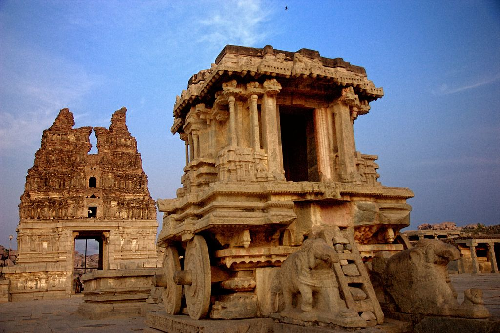Hampi’s rocky outcrops, chariot structures, gopurams, elephant stables, ornate halls – all depict the tale of one of the greatest Hindu kingdoms. It is believed that Lord Rama and his brother visited this historical place to search for Sita. They took the help of the two brothers Bali and Sugriv who ruled this region then. This UNESCO World Heritage Site is one of the most famous historical places in South India and was also the region where Vijayanagara’s main coin mint was situated.
Hampi, also referred to as the Group of Monuments at Hampi, is a UNESCO World Heritage Site located in east-central Karnataka, India. It became the centre of the Hindu Vijayanagara Empire capital in the 14th century. Chronicles left by Persian and European travellers, particularly the Portuguese, state Hampi was a prosperous, wealthy and grand city near the Tungabhadra River, with numerous temples, farms and trading markets. By 1500 CE, Hampi-Vijayanagara was the world's second-largest medieval-era city after Beijing, and probably India's richest at that time, attracting traders from Persia and Portugal. The Vijayanagara Empire was defeated by a coalition of Muslim sultanates; its capital was conquered, pillaged and destroyed by sultanate armies in 1565, after which Hampi remained in ruins.
Located in Karnataka near the modern-era city of Hosapete, Hampi's ruins are spread over 4,100 hectares (16 sq mi) and it has been described by UNESCO as an "austere, grandiose site" of more than 1,600 surviving remains of the last great Hindu kingdom in South India that includes "forts, riverside features, royal and sacred complexes, temples, shrines, pillared halls, mandapas, memorial structures, water structures and others". Hampi predates the Vijayanagara Empire; there is evidence of Ashokan epigraphy, and it is mentioned in the Ramayana and the Puranas of Hinduism as Pampaa Devi Tirtha Kshetra. Hampi continues to be an important religious centre, housing the Virupaksha Temple, an active Adi Shankara-linked monastery and various monuments belonging to the old city.
Location
Hampi is situated on the banks of the Tungabhadra River in the eastern part of central Karnataka near the state border with Andhra Pradesh. It is 376 kilometres (234 mi) from Bangalore, 385 kilometres (239 mi) from Hyderabad and 266 kilometres (165 mi) from Belgaum. The closest railway station is in Hosapete (Hospet), 13 kilometres (8.1 mi) away. During the winter, overnight buses and trains connect Hampi with Goa, Secunderabad and Bangalore. It is 140 kilometres (87 mi) southeast of the Badami and Aihole archaeological sites.
Texts and history
The toponym Hampi—traditionally known as Pampa-kshetra, Kishkindha-kshetra or Bhaskara-kshetra—is derived from Pampa, another name of goddess Parvati in Hindu theology. According to mythology, the maiden Parvati resolves to marry the loner ascetic Shiva. Her parents learn of her desire and discourage her, but she pursues her desire. Shiva is lost in yogic meditation, oblivious to the world; Parvati appeals to the gods for help to awaken him and gain his attention. Indra sends the god Kama—the Hindu god of desire, erotic love, attraction and affection—to awake Shiva from meditation. Kama reaches Shiva and shoots an arrow of desire. Shiva opens his third eye in his forehead and burns Kama to ashes. Parvati does not lose her hope or her resolve to win over Shiva; she begins to live like him and engage in the same activities—asceticism, yogin and tapasya—awakening him and attracting his interest. Shiva meets Parvati in disguised form and tries to discourage her, telling her Shiva's weaknesses and personality problems. Parvati refuses to listen and insists in her resolve. Shiva finally accepts her and they get married. According to Sthala Purana, Parvati (Pampa) pursued her ascetic, yogini lifestyle on Hemakuta Hill, now a part of Hampi, to win and bring ascetic Shiva back into householder life. Shiva is also called Pampapati (lit. "husband of Pampa"). The river near the Hemkuta Hill came to be known as Pampa river. The Sanskrit word Pampa morphed into the Kannada word Hampa and the place Parvati pursued Shiva came to be known as Hampe or Hampi.
The site was an early medieval era pilgrimage place known as Pampakshetra. Its fame came from the Kishkindha chapters of the Hindu epic Ramayana, where Rama and Lakshmana meet Hanuman, Sugriva and the monkey army in their search for kidnapped Sita. The Hampi area has many close resemblances to the place described in the epic. The regional tradition believes that it is that place mentioned in the Ramayana, attracting pilgrims.
Ancient to 14th century CE
Emperor Ashoka's Rock Edicts in Nittur and Udegolan—both in Bellary district 269-232 BCE—suggest this region was part of the Maurya Empire during the 3rd century BCE. A Brahmi inscription and a terracotta seal dating to about the 2nd century CE have been found during site excavations. The town is mentioned in Badami Chalukya's inscriptions as Pampapura; dating from between the 6th and 8th centuries.
By the 10th century, it had become a centre of religious and educational activities during the rule of the Hindu kings Kalyana Chalukyas, whose inscriptions state that the kings made land grants to the Virupaksha temple. Several inscriptions from the 11th to 13th centuries are about the Hampi site, with a mention of gifts to goddess Hampa-devi.[18] Between the 12th and 14th centuries, Hindu kings of the Hoysala Empire of South India built temples to Durga, Hampadevi and Shiva, according to an inscription dated about 1,199 CE. Hampi became the second royal residence; one of the Hoysala kings was known as Hampeya-Odeya or "lord of Hampi". According to Burton Stein, the Hoysala-period inscriptions call Hampi by alternate names such as Virupakshapattana, Vijaya Virupakshapura in honour of the old Virupaksha (Shiva) temple there.
14th century and after
The armies of the Delhi Sultanate, particularly those of Alauddin Khalji and Muhammad bin Tughlaq, invaded and pillaged South India. The Hoysala Empire and its capital Dvarasamudra in south Karnataka was plundered and destroyed in the early 14th century by the armies of Alauddin Khalji, and again in 1326 CE by the army of Muhammad bin Tughlaq.
The Kampili kingdom in north-central Karnataka followed the collapse of Hoysala Empire. It was a short-lived Hindu kingdom with its capital about 33 kilometres (21 mi) from Hampi. The Kampili kingdom ended after an invasion by the Muslim armies of Muhammad bin Tughlaq. The Hindu women of Kampili committed jauhar (ritual mass suicide) when the Kampili soldiers faced defeat by Tughlaq's army. In 1336 CE, the Vijayanagara Empire arose from the ruins of the Kampili kingdom. It grew into one of the famed Hindu empires of South India that ruled for over 200 years.
The Vijayanagara Empire built its capital around Hampi, calling it Vijayanagara. They expanded the infrastructure and temples. According to Nicholas Gier and other scholars, by 1500 CE Hampi-Vijayanagara was the world's second-largest medieval-era city after Beijing, and probably India's richest. Its wealth attracted 16th-century traders from across the Deccan area, Persia and the Portuguese colony of Goa. The Vijayanagara rulers fostered developments in intellectual pursuits and the arts, maintained a strong military and fought many wars with sultanates to its north and east. They invested in roads, waterworks, agriculture, religious buildings and public infrastructure. This included, states UNESCO, "forts, riverside features, royal and sacred complexes, temples, shrines, pillared halls, mandapas (halls for people to sit), memorial structures, gateways, check posts, stables, water structures, and more". The site was multi-religious and multi-ethnic; it included Hindu and Jain monuments next to each other. The buildings predominantly followed South Indian Hindu arts and architecture dating to the Aihole-Pattadakal styles, but the Hampi builders also used elements of Indo-Islamic architecture in the Lotus Mahal, the public bath and the elephant stables.
According to historical memoirs left by Portuguese and Persian traders to Hampi, the city was of metropolitan proportions; they called it "one of the most beautiful cities". While prosperous and in infrastructure, the Muslim-Hindu wars between Muslim Sultanates and Vijayanagara Empire continued. In 1565, at the Battle of Talikota, a coalition of Muslim sultanates entered into a war with the Vijayanagara Empire. They captured and beheaded the king, followed by a massive destruction of the infrastructure fabric of Hampi and the metropolitan Vijayanagara. The city was pillaged, looted and burnt for six months after the war, then abandoned as ruins, which are now called the Group of Monuments at Hampi.
Interesting fact: The first instance of human settlement recorded here dates all the way back to 1 CE.
Entry fee: Indians- INR 10
Foreigners- INR 330
This ticket allows entry to three ancient monuments: Vittala Temple, Zenena Enclosure and the Elephant stables
Open from: 10 am- 5pm ( closed on Fridays)
Must see: Hampi Monuments that have carvings from the 14th century!
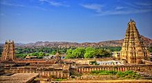
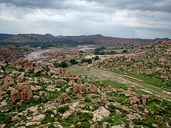
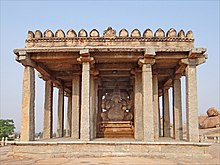
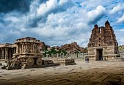
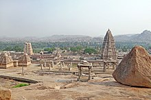
 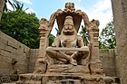
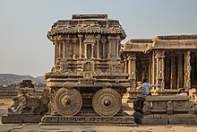
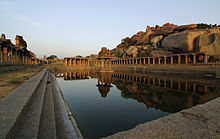
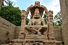
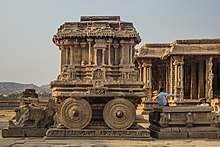
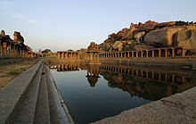

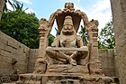
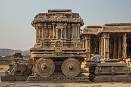
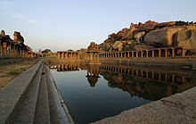
Developed By: Vineet Choudhary